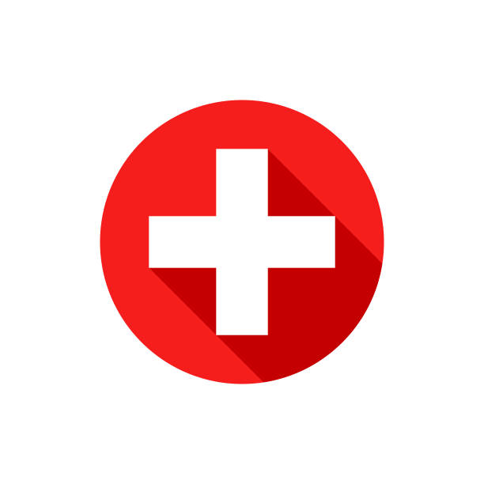
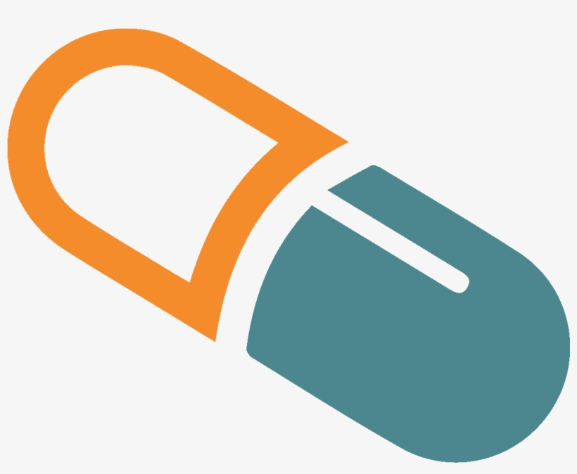

WELCOME TO AAROGYA
Thank You for being a part of our family...
Please take a look at our services
Welcome to AAROGYA
Welcome to Aarogya! We are delighted to have you here, and we extend our warmest greetings as you embark on your journey to better health and well-being. At Aarogya, we understand that your health is your most precious asset, and we are committed to providing you with the highest quality medical information and resources. Our website is designed with you in mind – whether you are seeking information about a specific medical condition, looking for expert health advice, or simply aiming to maintain a healthier lifestyle, we have a wealth of valuable content to offer. Why Choose Us? Credible Information: Our team of experienced medical professionals and experts ensure that all the information presented on our platform is evidence-based, accurate, and regularly updated. You can trust that the knowledge you gain here is reliable and trustworthy. User-Friendly Experience: We believe that accessing medical information should be easy and intuitive. Our user-friendly interface allows you to navigate seamlessly through our articles, guides, and resources, making your experience with us smooth and enjoyable. Comprehensive Coverage: From general health tips and preventive care to in-depth medical articles and treatment options, we cover a wide range of topics to cater to your diverse health needs. Empowerment: Our mission is to empower you to take an active role in managing your health. We provide the tools and knowledge necessary to make informed decisions and lead a healthier lifestyle. Privacy and Security: Your privacy and security are of utmost importance to us. We prioritize safeguarding your personal information and adhere to strict privacy policies. We encourage you to explore our website and discover the valuable information it holds. Remember, while we provide valuable insights, it is crucial to consult with qualified healthcare professionals for personalized medical advice and treatment. Thank you for choosing [Medical Website Name]. We are excited to be a part of your health journey, and we look forward to supporting you every step of the way. Should you have any questions or feedback, please do not hesitate to reach out to us. Wishing you good health and happiness! Sincerely, The Aarogya Team
Our Services
LOCATION SERVICES
Welcome to our Medical Website, your trusted companion for all your healthcare needs! At our Medical Website, we understand that finding the right medical services can be a crucial aspect of your healthcare journey. That's why we are pleased to offer comprehensive location services to help you easily locate hospitals, pharmacies, and doctors in your area. Hospital Locations: When it comes to your health or the health of your loved ones, knowing the nearest hospitals is of paramount importance. Our website provides a user-friendly hospital locator that allows you to find the closest medical facilities to your location. Whether you need emergency care or are planning a medical appointment, our hospital location service ensures that you have quick and convenient access to the medical attention you require. Pharmacy Locations: Getting your prescriptions filled or finding over-the-counter medications should be hassle-free. With our pharmacy location service, you can easily locate pharmacies near you, ensuring that you have easy access to the medications you need. Whether you are at home, work, or traveling, our pharmacy locator will guide you to the nearest pharmacy, so you never have to worry about finding essential medicines. Doctors Locations: Building a strong and trusting relationship with your healthcare provider is vital for maintaining your well-being. Our website's doctor location service allows you to find qualified and experienced doctors in your area. Whether you need a primary care physician, specialist, or a healthcare professional with particular expertise, our doctor locator will help you find the right medical practitioner who can cater to your specific needs. How It Works: Using our location services is simple and intuitive. You can easily enter your current address or allow location access, and our platform will provide you with a list of nearby hospitals, pharmacies, or doctors' offices. You can filter results based on your preferences, such as the type of medical facility or the medical specialty you require. Your health and convenience are our top priorities, and we are dedicated to making your healthcare experience as seamless as possible. Please remember that while our location services can help you find medical facilities and practitioners, it's essential to consult with these professionals directly for personalized medical advice and treatment. Thank you for choosing our Medical Website as your partner in health. We are here to support you on your health journey and to ensure that you have access to the best medical care in your area. Stay healthy, stay informed! Sincerely, The Aarogya Team
FIRST AID SERVICES
Welcome to our Medical Website, your go-to resource for life-saving first aid instructions tailored to specific situations! Accidents and emergencies can happen when least expected, and knowing the appropriate first aid measures can make a significant difference in saving lives and preventing further harm. At our Medical Website, we understand the importance of quick and accurate first aid responses in various situations, and that's why we provide comprehensive first aid instructions according to specific scenarios. Our First Aid Services: Step-by-Step Guidance: Our website offers easy-to-follow, step-by-step first aid instructions for a wide range of situations. Whether it's a minor injury, a medical emergency, or a sudden illness, we aim to equip you with the knowledge and confidence to take immediate action and provide essential care. Categorized Situations: We have categorized first aid instructions based on different situations, such as: Common Injuries: Learn how to handle cuts, burns, sprains, and other everyday injuries effectively. Medical Emergencies: Understand how to respond to heart attacks, strokes, seizures, and other critical medical emergencies until professional help arrives. Environmental Hazards: Get guidance on dealing with heatstroke, hypothermia, and insect bites, among other environmental hazards. Visual Aids: To enhance your understanding and make learning first aid more accessible, we provide visual aids, including images and videos, demonstrating the correct procedures. Preparedness Tips: In addition to emergency responses, our website offers preparedness tips to help you stay proactive and be ready for potential emergencies. This includes creating a first aid kit, learning CPR techniques, and identifying potential risks in your surroundings. Accessible Anytime, Anywhere: Our first aid instructions are available 24/7, allowing you to access crucial information whenever and wherever you need it. Whether you're at home, work, or traveling, our website is your reliable source of immediate assistance. Remember, while first aid knowledge is invaluable, it is not a substitute for professional medical care. In emergencies, always call for help from trained medical personnel or emergency services. We are committed to empowering you with life-saving skills and knowledge to protect yourself, your loved ones, and those around you. Thank you for choosing our Medical Website as your trusted resource for first aid instructions in different situations. Stay prepared, stay safe! Sincerely, The Aarogya Team
MEDICAL SERVICES
We, at Aarogya, are committed to ensuring your health and safety by providing reliable information about medications and their proper usage. As part of our dedication to your well-being, we wish to draw your attention to an essential aspect of medication management: the combination of drugs. When multiple medications are prescribed concurrently, it is crucial to be aware of potential interactions between them. Drug interactions can vary from mild to severe, and they may interfere with the effectiveness of the medications or pose risks to your health. Our medical team strongly advises you to exercise caution when using a combination of drugs and encourages you to take the following precautions: Consult Your Healthcare Provider: Before starting any new medication or altering your existing regimen, consult your healthcare provider. Inform them about all the medications you are currently taking, including over-the-counter drugs and supplements. Medication List Review: Keep an updated list of all your medications, doses, and the corresponding prescribing healthcare professionals. This will help avoid duplication and minimize the risk of drug interactions. Inform Pharmacist: Whenever you visit a pharmacy, inform the pharmacist about all the medications you are using. They can cross-check for potential interactions and provide guidance. Stay Informed: Educate yourself about the potential side effects and interactions of your medications. Knowledge empowers you to recognize warning signs and seek prompt medical attention if necessary. Report Adverse Effects: If you experience any unexpected side effects or adverse reactions while using a drug combination, contact your healthcare provider immediately. Avoid Self-Medication: Refrain from adding new medications to your regimen without professional advice, and avoid sharing your prescription drugs with others. Your safety and well-being are of utmost importance to us. By being informed and vigilant about drug combinations, you can play an active role in your healthcare journey. If you have any concerns or questions regarding your medications, please feel free to reach out to our medical team. Wishing you good health and wellness, Aarogya
About Us
Welcome to Aarogya! At Aarogya, our mission is to provide reliable, up-to-date, and comprehensive medical information to empower individuals to take charge of their health and well-being. We understand that navigating the world of healthcare can be overwhelming, and our platform aims to make it easier for you to access trustworthy resources and make informed decisions about your health. What Sets Us Apart: Expertise: Our team of medical professionals, including doctors, nurses, and healthcare experts, ensure that all the information provided on our website is accurate, evidence-based, and reviewed regularly. We strive to maintain the highest standards of medical accuracy and ethical publishing. Comprehensive Content: We cover a wide range of medical topics, from general health and wellness to specific medical conditions, treatments, and preventive care. Whether you're seeking information about common ailments or rare diseases, we have you covered. User-Friendly Interface: We believe that accessing medical information should be simple and user-friendly. Our website is designed with a clean and intuitive interface, making it easy for you to find the information you need quickly. Empowering Patients: We strongly believe in empowering patients to be active participants in their healthcare journey. We provide educational resources that not only inform but also inspire individuals to make positive lifestyle changes and advocate for their health. Privacy and Security: Your privacy and security are of utmost importance to us. We adhere to strict privacy policies and use the latest security measures to protect your personal information. Our Content: Medical Articles: Our team of medical experts regularly publishes well-researched articles on various health topics. These articles cover symptoms, causes, diagnosis, treatment options, and prevention strategies for numerous medical conditions. Health Tips and Guides: We offer practical tips and guides to promote a healthy lifestyle. From exercise routines and nutrition advice to stress management techniques, our aim is to help you achieve optimal well-being. Patient Stories: Real-life experiences can be powerful sources of inspiration and support. We share stories of patients who have overcome health challenges, providing encouragement to others facing similar situations. Q&A and Forums: Have a health-related question? Our Q&A section allows you to get answers from our medical experts. Additionally, our forums provide a platform for users to engage with each other, share experiences, and offer support. Remember, while our website is a valuable resource, it is essential to consult with a qualified healthcare professional for personalized medical advice and treatment. Thank you for choosing Aarogya as your trusted source for medical information. We are dedicated to serving you and promoting a healthier world for everyone. Stay informed, stay healthy!
Contact Us
If you have any questions or would like to schedule an appointment, please reach out to us:
- MAIL US HERE...
- MAIL YOUR QUERIES TO US
- OUR CONTACT:- 24/7 CONTACT SERVICE AVAILABLE...
- CLICK HERE AND CONTACT US
OUR SERVICES

LOCATION SERVICES
know the services around youGet the access to locations of various hospitals, doctors and pharmacies around you. Why Late? Complete your registration as soon as possible and get the access

FIRST AID SERVICES
know how to give first aidAAROGYA first aid services guides you how to give first aid during various situations. Why Late? Complete your registration as soon as possible and get the access

MEDICAL SERVICES
know how the prescription worksAAROGYA medical services educates you how the medicines in the doctor prescription works. Why Late? Complete your registration as soon as possible and get the access